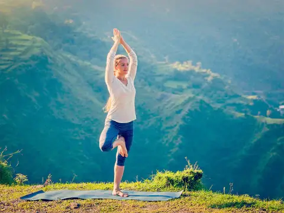
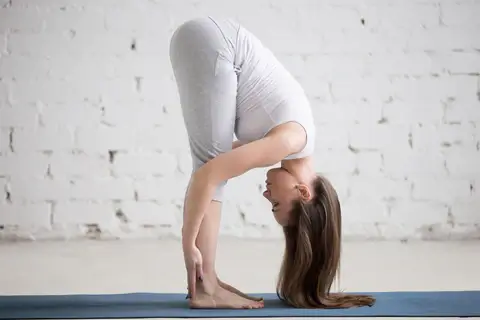
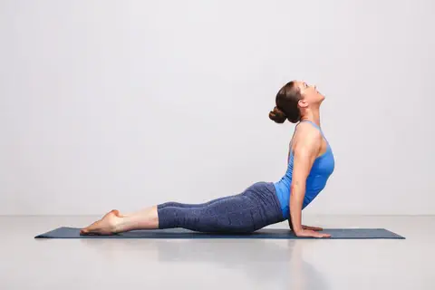
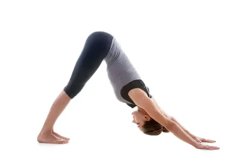
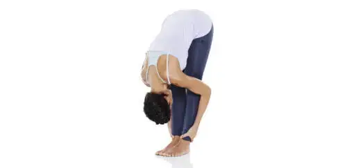
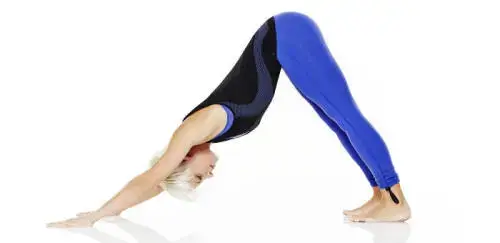

<!DOCTYPE html>
<html lang="en">

<head>
    <meta charset="UTF-8">
    <meta http-equiv="X-UA-Compatible" content="IE=edge">
    <meta name="viewport" content="width=device-width, initial-scale=1.0">
    <!-- Title-->
    <title>Mindful Movement</title>
    <!-- Favicon -->
    <link rel="apple-touch-icon" sizes="180x180" href="assets/favicon/apple-icon-180x180.png">
    <link rel="icon" type="image/png" sizes="32x32" href="assets/favicon/favicon-32x32.png">
    <link rel="icon" type="image/png" sizes="16x16" href="assets/favicon/favicon-16x16.png">
    <link rel="stylesheet" href="assets/css/style.css">

    <script src="https://cdnjs.cloudflare.com/ajax/libs/jquery/3.5.1/jquery.min.js"></script>
    <script src="https://cdnjs.cloudflare.com/ajax/libs/twitter-bootstrap/3.3.7/js/bootstrap.min.js"></script>


</html>
</head>

<body>
    <!-- Header -->
    <header>
        <a href="index.html">
            <h1 id="logo">Mindful Movement</h1>
        </a>

        <input type="checkbox" id="nav-toggle" name="nav-toggle">
        <label for="nav-toggle" class="nav-toggle-label">
            <i class="fa-solid fa-circle-chevron-down">More</i>
        </label>
        <nav>
            <ul id="menu">
                <li>
                    <a href="index.html">Home</a>
                </li>
                <li>
                    <a href="poses.html" class="active">Poses</a>
                </li>
                <li>
                    <a href="signup.html">Sign up</a>
                </li>
            </ul>
        </nav>


    </header>

    <!-- Main content -->
    <main>
        <section id="poses">
          
            <div class="mountain-pose">
                
            <h2>Mountain Pose</h2>
            <p>This is a standing posture which is often done right at the beginning of most yoga classes. Here is a break-down of the
            pose along with the alignment and breath cues to gain the most out of performing this fundamental yoga pose.
            First, stand nice and tall at the top of your yoga mat. Align your feet so that they are about hip distance apart with
            your toes pointing directly forward. This creates very good alignment in your legs and hips. Feel a lengthening in your
            spine as you stand up straight. Look forward with your arms down by your side. Allow your shoulders to roll back so that
            you have good posture throughout your body.
            Breathing is a key element while practicing yoga. While standing in Mountain Pose, simply breathe in deeply; fill up
            your lungs. Then slowly breathe out. Focusing on your breath helps you to stay focused on the posture, your movement,
            and generally keeps your mind from wandering.</p>
            </div>
        <br>
            <div id="standing-forward-pose">
                
                <h2>Standing Forward Pose</h2>
                <p>Many people state that they have very tight hamstrings and it is hard for them to bend over and touch their toes. Are
                you one of those people? This movement from Mountain Pose to Standing Forward Fold will teach you how you can begin the
                process of loosening up those tight hamstrings.
                While standing tall in Mountain Pose, inhale, and extend your arms into the air. When you raise your arms, move with
                effort. You want to feel like you are reaching up to touch the ceiling. Exhale and draw your navel inward toward your
                spine. This braces your body before you put your body into motion. Place a slight bend in your knees, extend your arms
                out to the side, and slowly fold forward. Now, you do not need to touch your toes at the end of the posture. Instead,
                especially if you're a little tight in your legs, you can partially fold and let your hands rest on your shins or knees.
                You can also use props to help you into a pose like this. If your hands don't reach the floor, you can place them on a
                couple of stacked yoga blocks. You can get these wonderfully helpful yoga props from majisports.com. Feel free to hold
                this posture for up to ten breaths. Holding the posture while continuing to breathe will start the lengthening in your
                legs to help open them up. (The posture will also help to loosen up your back.)
                To stand up safely, shift your weight back toward your heels, bend your knees, drop your hips, look forward, and extend
                your arms out to the side. This creates length in the spine before fully rising to a standing position; you will use
                your strong legs rather than potentially straining your back to stand up. Inhale to lengthen your legs and stand up.
                Finish your inhale by extending your arms into the air. Exhale, and return your arms down to your side.
                This flow of the body is a very typical way of moving in a yoga class. The breath, along with well structured alignment,
                will support your body in motion from pose to pose.</p>
            </div>
        <br>
           <div id="upward-facing-dog">
            
            <h2>Upward Facing Pose</h2>
            <p>You can start this pose by lying on your stomach with your legs stretched out behind you. Place your hands directly
            underneath your shoulders. Your elbows will be bent. To begin the movement into Upward Facing Dog, you may need to slide
            your hands back a bit so that your bent elbows are aligned over your wrists. This creates a right angle which is
            essential for proper leverage to move into the posture. Inhale, to lengthen your legs and spine. As you exhale, press
            your hands into the mat in order to lift your chest and hips off the floor. (It's ok to keep your knees on the ground.)
            As you rise, you will create a backbend in your body. Keep your focus forward.</p>
           </div> 
        <br>
          <div id="downward-facing-dog">
            
            <h2>Downward Facing Pose</h2>
            <p>While still holding Upward Facing Dog, take another full breath in to fill up your lungs. Then, as you exhale, step onto
            your tip toes, bend your knees, and push your hands into the mat to lift your hips up into the air toward the wall
            behind you. You will create an inverted V-shape with your body. (It's alright to maintain a slight bend in your knees in
            this pose. Your heels don't need to touch the mat. Be sure your arms are straight and strong while your hands push
            firmly into the earth.) Hold for five breaths.
            These are just some poses you will encounter in a basic yoga class. You will see that these postures rely on your breath
            and the engagement of your whole body. Practicing yoga takes much effort and attention. Whether its moving through a
            series of poses or holding one or two postures, it requires full awareness and focus. That, essentially, is the
            intention of any yoga practice: to become more mindful, connected, and deeply aware of yourself.</p>
          </div>
          <br>
        <div id="half-moon-pose">
            
            <h2>Half Moon Pose</h2>
            <p>
            Breathe in deeply, then as you breathe out, stretch one leg out behind you in a lunge position, ensuring the top of your
            foot is flat to the ground. Try to push your rear heel back as far as possible. Bend your front knee. Breathe in, then
            out as you raise your arms towards the ceiling. In this pose, try to tilt your hips forwards and downwards. Engage your
            arms and lower your shoulders. Keep your hips in a neutral position without turning them
            </p>
        </div>
        <br>
        <div id="childs-resting">
            
            <h2>Child's resting with arms extended</h2>
            <p>
            Kneel down on the ground, resting back on your heels. Breathe in, breathe out, and then bend forwards from the waist,
            pushing with your heels, keeping your arms stretched out near your ears. You should feel your torso come into contact
            with your thighs. Stretch out your neck and back by pushing your tailbone toward the ground.
            </p>
        </div>
       
        </section>
    </main>
    <br>
    <!-- Footer -->
    <footer>
        <div class="contact-info">
            <!-- clickable links that will open phone or email window for user  -->
            <p>Phone: <a href="tel:0863549189">086-3549189</a></p>
            <p>Email: <a href="MindfulMovement@gmail.com">MindfulMovement@gmail.com</a></p>
        </div>
        <ul id="social-media">
            <li>
                <a href="https://www.instagram.com/" target="_blank" rel="noopener"
                    aria-label="Visit our Instagram page (opens in a new tab)">
                    <i class="fa-brands fa-instagram"></i></a>

            </li>
            <li>
                <a href="https://www.youtube.com/" target="_blank" rel="noopener"
                    aria-label="Visit our YouTube page (opens in a new tab)">
                    <i class="fa-brands fa-youtube-square"></i></a>
            </li>
            <li>
                <a href="https://www.tiktok.com/en/" target="_blank" rel="noopener"
                    aria-label="Visit our Tiktok page (opens in a new tab)">
                    <i class="fa-brands fa-tiktok"></i></a>
            </li>
        </ul>
    </footer>

    <!-- Font Awesome kit -->
    <script src="https://kit.fontawesome.com/3b20d96fa9.js" crossorigin="anonymous"></script>
</body>

</html>